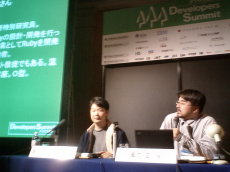
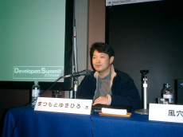

Matz Talked At Developers Summit 2005 #

Developers Summit 2005 was hold at Feb 3-4 in Japan and Matz guested at a discussion session for 90 minutes. About 150 audiences that filled the room listened to the Ruby’s history and so forth. Kazaana-san, the host, asked them to raise their hands: two thirds had ever used Ruby, twenty used Ruby at office and ten were developers of Open Source projects.
Ruby was born at Feb 24, 1993, when Matz had an idea and named it ‘Ruby’, however, there was no single line of codes. Dec 1994 he posted about Ruby at a news group. Nov 1995 he showed the source code to the public.
He talked about Ruby’s development organization. There are four mailing lists: ruby-dev, ruby-list for Japanese; ruby-core, ruby-talk for English. I skip the details since you should know well. Pending issues are release management and documentation. He set up a bug tracking system once, but does not use it now because filing bugs for both Japanese and English was too troublesome. The current BTS is his mail reader.

He recommended that Open Source developers should not write licenses by themselves but pick one from the standards. Writing a good enough license is more difficult than you think. Many users in the world mail him every month and ask whether they can use Ruby for their projects but he tried to write Ruby’s license not to receive such mails.
The host seemed to get good theories and practices to lead Open Source projects, referring Ruby’s project and Linux’s. I thought such a topic was too general to talk in a short time and that Ruby and Linux should be controlled by a different organization theorem.
I spent the second day afternoon with Matz and took some sessions together. Matz opened his thinkpad and started to debug Ruby. It was parse.y. I add a reason why I use Debian with Ruby: Matz uses Debian.
gab
interesting post, thanks. Btw, regarding license: if I where matz I’d choose a simpler widely known license instead of ruby’s+gpl. Something like MIT , fo which lawyers are already prepared :)
why
I love that Matz was debugging Ruby’s parser during the conference! A triumphant snooping, daigo.
daigo
I was very sorry that I had no skill to pair-program. It was good chance to see his way of thinking and debugging. At last he added an entry to the changelog and replied a mail.
matz
gab, I was trying to say that was my mistake to create a new license, and suggest not to make same mistake, in the session. If I can go back to 13 years ago, I’d suggest me not to make up my own license.
Asenchi
Out of curiosity, is it possible to change a license 13 years into a project?
matz
I’m not sure. I’m afraid that it requires agreement from every non trivial code contributers.
Andre
matz, do you intend to use a standard license for Rite, or will you keep the current one?
matz
Andre, I want to use a standard license, such as BSD -like. But after all, tomorrow is another day.
Comments are closed for this entry.